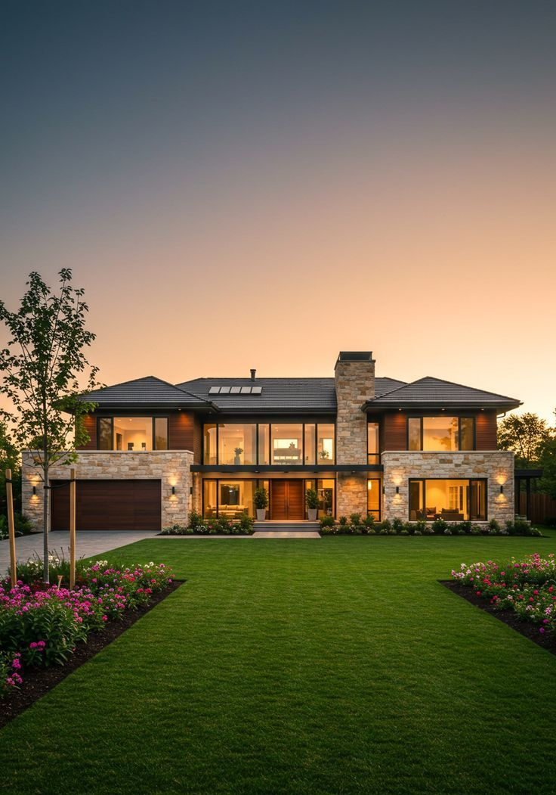

"Não fostes vós que Me escolhestes a Mim; pelo contrário, Eu vos escolhi a vós outros e vos designei para que vades e deis fruto, e o vosso fruto permaneça." (João 15:16)
A paz esteja consigo e sobre a sua casa, amado(a) irmão(ã). Quando esteve diante da sua decisão e escolheu plantar a sua semente de fé, uma notificação solene chegou diante da nossa equipa de oração e intercessão.
Queremos que saiba algo de profunda importância: o seu nome não foi esquecido no éter da internet. Por detrás de cada página, de cada oração e de cada linha deste Manuscrito, existe uma equipa pastoral consagrada que apresenta diariamente os nomes de todos os fiéis diante do Altar do Altíssimo.
Sabemos exatamente as dores que carregou até ao dia de hoje: as noites em claro a olhar para o teto a pensar como pagaria as contas do mês seguinte, o cansaço inexplicável no peito, as portas profissionais que pareciam fechar-se sem explicação e aquela sensação terrível de que a sua vida estava presa num ciclo sem fim.
Este Manuscrito não é um simples e-book ou manual técnico de autoajuda. Ele é um Tratado Espiritual de Autoridade. O que tem nas suas mãos agora é a chave para alinhar a sua fala, os seus pensamentos e as suas ações diárias com as promessas inquebráveis de Deus.
Durante a sua jornada inicial, quando respondeu com honestidade ao valor que tinha disponível na sua conta bancária, uma operação sobrenatural foi ativada diante dos seus olhos: a multiplicação por 100x.
A maioria das pessoas vive limitada pela matemática dos homens: trabalhar 30 dias para receber um salário subtraído pelas dívidas. Na matemática do mundo, se você tem 1.000€, a sua mente só consegue conceber poupar 50€ ou 100€ ao final de um mês extenuante. Isso é a lógica da adição e escassez.
Porém, a economia do Reino de Deus nunca funcionou por adição. O Deus de Abraão, Isaque e Jacó opera exclusivamente através da lei da multiplicação sobrenatural:
Repare num detalhe bíblico que a maioria ignora: Isaque colheu cento por um num ano de grande fome e seca extrema! Quando a terra estava estéril e todos os vizinhos faliam ao seu redor, a semente de Isaque multiplicou cem vezes mais porque a sua aliança não era com o clima da terra, mas sim com a Promessa do Céu.
Uma semente de maçã é minúscula e insignificante aos olhos humanos. Mas dentro daquela pequena semente não existe apenas uma maçã; existem milhares de árvores, milhares de pomares e um ciclo infinito de colheitas. Quando você planta com fé e com propósito, você não está a gastar o seu recurso: está a transferir a sua causa para a jurisdição de Deus.
Se hoje se sente cansado(a), se já chorou em segredo ou se perguntou por que razão a sua vida parecia tão difícil enquanto pessoas sem caráter prosperavam, precisa de compreender os Três Ciclos de Provação Sagrada.
Nenhum grande homem ou mulher na Bíblia chegou à plenitude da bênção sem antes ser provado no fogo. O seu deserto atual não é uma punição de Deus; é a escola onde Ele está a forjar o seu caráter para que a prosperidade futura não o destrua.
José foi traído pelos seus próprios irmãos, vendido como escravo e injustamente encarcerado no calabouço egípcio por treze anos. Ele não cometeu qualquer pecado para estar ali. No entanto, a Bíblia relata três palavras repetidas vezes: "O Senhor era com José".
A Lição para Si: Mesmo quando o seu trabalho parece desvalorizado e a sua fidelidade não reconhecida, Deus está a posicioná-lo(a). Em menos de 24 horas, José saiu da prisão diretamente para o governo de todo o Egito. A sua virada também acontecerá com rapidez divina!
Deus pediu a Abraão aquilo que ele mais amava: o seu único filho Isaque no alto do monte Moriá. Abraão não questionou, não murmurou e não hesitou. Ele subiu o monte crendo que Deus era poderoso até para ressuscitar os mortos.
A Lição para Si: Deus não queria o filho de Abraão; Deus queria a confiança irrestrita do coração de Abraão. Quando Abraão levantou o cutelo, um anjo clamou: "Não estendas a mão sobre o rapaz!" e no mesmo instante um carneiro apareceu preso nos arbustos. A provisão só aparece depois de você dar o passo de fé!
Jó perdeu os seus bens, os seus filhos e a sua saúde num único dia trágico. Os seus amigos disseram que ele estava amaldiçoado. A sua própria esposa mandou-o amaldiçoar a Deus e morrer. Mas Jó respondeu com a mais poderosa declaração de fé da história:
E qual foi o desfecho de Jó? "O Senhor deu a Jó o dobro de tudo o que antes possuíra... e abençoou o último estado de Jó mais do que o primeiro." (Jó 42:10-12).
No seu diagnóstico espiritual, identificou-se que a maioria das pessoas não prospera porque carrega amarras invisíveis na alma. A Bíblia adverte: "O meu povo perece por falta de conhecimento" (Oseias 4:6). Vamos quebrar agora cada um dos quatro bloqueios que travaram o seu destino até aqui:
Se os seus pais ou avós viveram afundados em dívidas, brigas e escassez, existe uma tendência espiritual de repetição de padrões. Mas Gálatas 3:13 afirma: "Cristo nos resgatou da maldição da lei, fazendo-Se maldição por nós". A partir do momento em que consagra este Manuscrito, essa linha genética de pobreza é cortada pela raiz.
Muitas pessoas oram pedindo prosperidade, mas no fundo sentem-se indignas ou têm medo de que o dinheiro seja pecado. Saiba disto: a pobreza nunca foi virtude cristã. O dinheiro nas mãos de um servo de Deus transforma-se em pão para quem tem fome, paz para a família e sustento para as boas obras. Você é filho(a) do Rei do Universo!
A ansiedade é o sinal de que você está a tentar carregar nos seus próprios ombros o peso que pertence a Deus. Filipenses 4:6 instrui: "Não andeis ansiosos por coisa alguma; antes, as vossas petições sejam conhecidas diante de Deus pela oração e súplica, com ação de graças".
Quantas vezes disse: "As coisas estão tão difíceis", "Nada dá certo para mim" ou "Não sei como vou sobreviver este mês"? Provérbios 18:21 alerta: A morte e a vida estão no poder da língua. A partir de hoje, a sua boca só falará palavras de graça, vitória e abundância.
Eis os 10 Portais sagrados que foram desbloqueados durante o seu percurso no Altar da Fé:
Ativação da unção de Isaque. Todo o recurso honesto que entra nas suas mãos deixa de minguar e passa a render com bênção multiplicadora.
A quebra do conformismo com a mediocridade. Deus devolve-lhe a visão e a coragem santa de sonhar grande e planear o seu amanhã com esperança.
A fé inabalável que move montanhas. O fim das dúvidas corrosivas e a convicção absoluta de que Deus já preparou a vitória antes mesmo da batalha.

Decreto de proteção sobre as quatro paredes da sua habitação. O fim das ameaças de despejo, dívidas de habitação e desassossego doméstico.
O acesso a meios materiais que tragam segurança, conforto e dignidade para si e para a sua família nos seus deslocamentos diários.
Restauração de laços desfeitos, reconciliação entre pais e filhos e afastamento de espíritos de contenda e divisão no seio do lar.
Renovação física e alívio das dores crónicas. Vitalidade redobrada para acordar com ânimo e energia para construir o seu legado.
Depósitos sobrenaturais de graça. Processos que estavam travados na justiça são liberados; heranças, dívidas perdoadas e oportunidades surgem do nada.
Tempo de compressão divina. O que levaria dez anos para alcançar pelo esforço comum, o favor de Deus realiza em semanas ou meses.
Destruição total de qualquer olho gordo, inveja ou laço que tentava sabotar o seu sucesso. As portas do Céu ficam abertas permanentemente.
Consagre 5 minutos todas as manhãs para ler o decreto em voz alta. A palavra profética emitida cria a realidade do seu dia.
Certifica-se por meio deste documento que o Manuscrito Sagrado foi oficialmente entregue e ativado na vida e linhagem de:
"O Senhor te abençoe e te guarde; o Senhor faça resplandecer o Seu rosto sobre ti e tenha misericórdia de ti; o Senhor sobre ti levante o Seu rosto e te dê a paz." (Números 6:24-26)